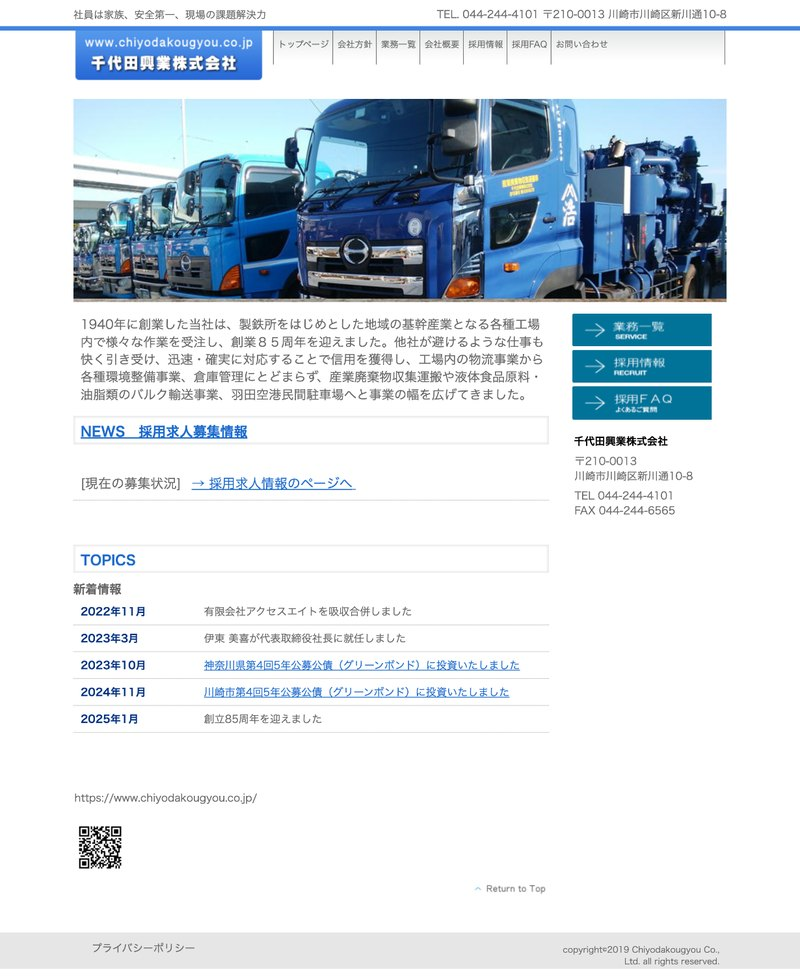
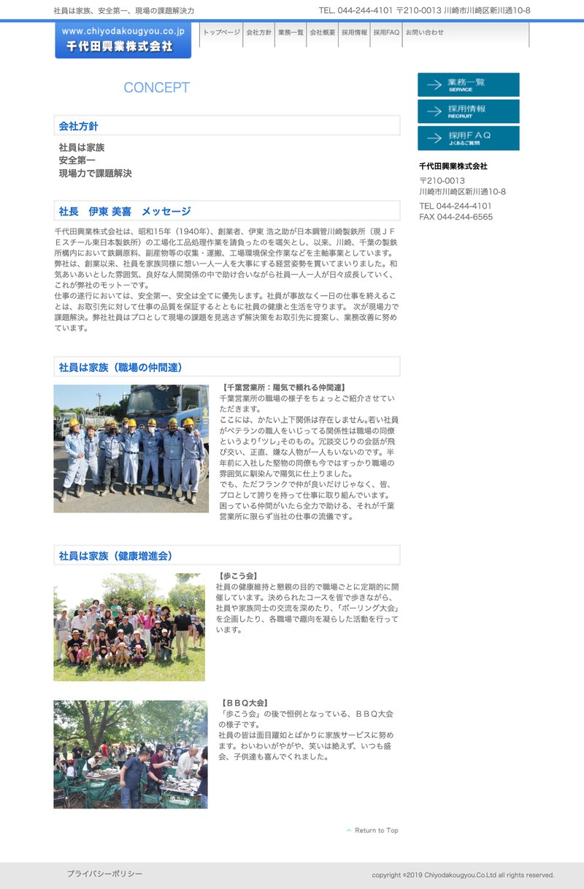
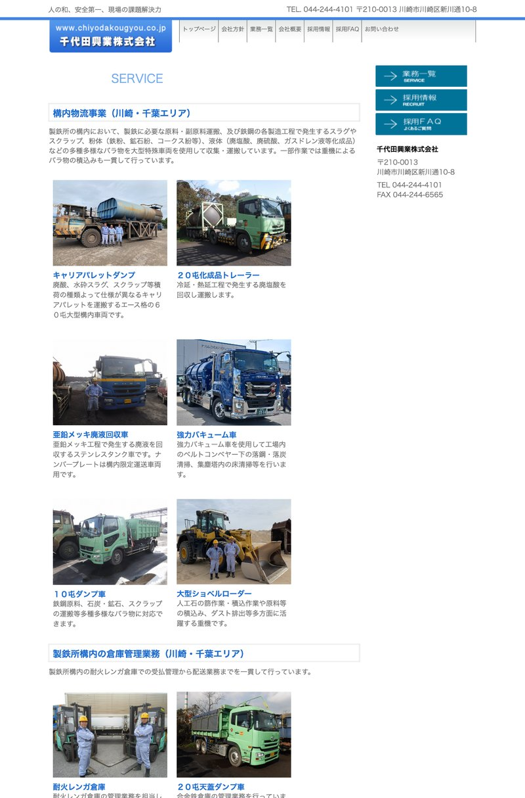
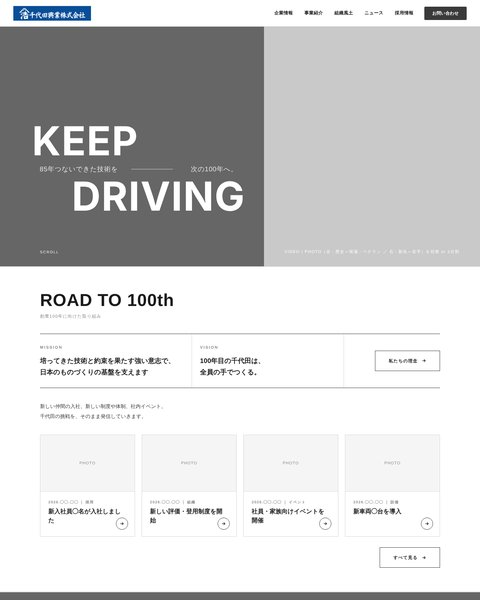
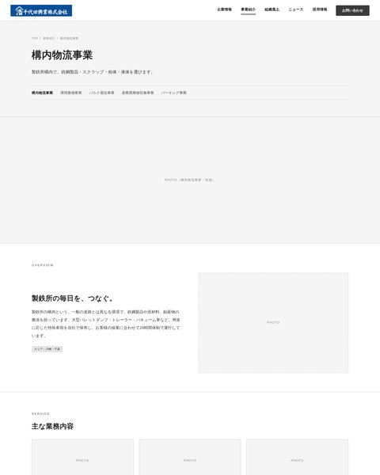

CHIYODA KOGYO — CORPORATE SITE RENEWAL
コーポレートサイト リニューアル
— コンセプトとデザインの方向性 —
ビジュアルデザインに進む前に、サイトの考え方と見た目の方向を皆さまと確かめるための資料です。
千代田興業株式会社御中unou株式会社
現行デザイン



00はじめに
本資料の構成
会社の考え方（MVV）から出発し、サイトのコンセプト、見た目の方向性、構成の順にご説明します。
01
MVV会社の存在意義と目指す姿。サイト全体の土台になる考え方02
サイトのコンセプト「85年の軌跡を、次世代につなぐ。」と、KEEP DRIVING・つなぐ・継続発信の2企画03
デザインコンセプトコンセプトを、見た目でどう表現するか04
サイトのトンマナ目指すトーンの位置と、色・書体・写真・レイアウトの指針05
ムードボード参考サイト4件と、取り入れたい点・避けたい点06
サイトマップコーポレートサイトと採用サイトの構成07
ワイヤーフレーム全ページのWF（Web上で閲覧）と、トップページの設計ポイント
本日ご確認いただきたいこと：03〜05の「見た目の方向性」です。ここが定まれば、10月中にビジュアルデザインを進めます。
01MVV
MVVの位置づけ
サイトで伝えるすべての言葉は、MVVから出発しています。既存の経営理念は置き換えず、三層に役割を分けています。
ミッション
不変の存在意義。創業から変わらず、次の100年も変わらないもの。
サイト：企業情報 ＞ ミッション・ビジョン・バリュー
ビジョン
5〜10年後に実現しておきたい状態。承継のタイミングで再定義する前提。
サイト：トップページ ROAD TO 100th のセクション／企業情報
バリュー
日々の行動規範。既存の経営理念はここに発展的に統合（置き換えではない）。
策定中。確定後にサイトへ反映
現在の状況：ミッション・ビジョンは現行案をブラッシュアップ中です。サイト上の掲載箇所は先に用意し、文言は確定後に差し替えます。
01MVV
ミッション案
私たちは＋手段＋対象・意義手段と対象・意義を
1つずつ選び、1文にします
手段
1他にはできない運搬と処理の技術で
2現場で磨き続けてきた技術で
3技術と想いをつなぎ続け
4一つひとつの仕事を、確かにやり遂げ
案4の別案
確かな仕事を積み重ね確実な仕事の積み重ねで一つひとつの現場を止めることなく任された仕事を、最後までやり遂げ
対象・意義
A日本の基幹産業を支える ／ 支え続ける
B日本の産業の土台を支える（別表現：日本の産業インフラを担う）
C産業と暮らしをつなぎ、日本の毎日を動かし続ける
D素材から暮らしまでを、確かにつなぐ
組み合わせ例：私たちは、現場で磨き続けてきた技術で、日本の基幹産業を支え続ける。
※手段3とC・Dは「つなぐ」が重なるため、組み合わせない想定です。
01MVV
ミッション 案2
対象・意義産業と暮らしをつなぎ、
日本の毎日を動かし続ける
01MVV
ビジョン
100年目の千代田は、
全員の手でつくる。
02サイトのコンセプト
サイトコンセプトの全体像
広報コンセプト「85年の軌跡を、次世代につなぐ。」を軸に、タグライン・核の言葉・継続発信の3つでサイト全体を組み立てます。
85年積み重ねてきた技術と信頼を土台に、次世代への引き継ぎ・若手の採用など、いま始まっている取り組みを発信する。
タグライン（KV）
KEEP DRIVING
止めずに続けてきた85年と、次の100年へ走り続ける姿勢を、2語で言い切る。
トップページKV／サブコピー「85年つないできた技術を、次の100年へ。」
核の言葉
つなぐ
モノ（事業）・期待（信頼）・人（継承）を、ひとつの動詞で束ねる。
About Us「鉄も、食も、人々も。先人の技術と想いを、次の世代へ。」
継続発信
ROAD TO 100th
CHIYODA WAY
次世代への取り組みと、85年の技術を支える人を、公開後も発信し続ける2つの企画。
ニュース／組織風土・採用サイト
02サイトのコンセプト
広報・PRのコンセプト
85年積み重ねてきた技術と信頼を土台に、いま始まっている次世代への取り組みを発信する。この一文を、社外への見せ方の軸にします。
85年の軌跡を、次世代につなぐ。
PHOTO85年の軌跡｜製鉄所構内・創業からの現場
PHOTO次世代につなぐ｜若手・新しい取り組み
02サイトのコンセプト
「次世代につなぐ」について
「次世代につなぐ」とは、これから始めることではなく、すでに経営層が始めている取り組みのことです。
いま、始まっていること
次世代への引き継ぎ若手の採用組織の改善施策（職務設計・登用・技術の伝承）
千代田興業が100年以上続く会社になるために、
若手の採用に力を入れていく。
そのためには、過去に固執せず、新しい取り組みをしている会社であると認識されることが、商品市場・労働市場の両方で大切になります。
整理：「85年の軌跡」は信頼の根拠、「次世代につなぐ」取り組みは選ばれる理由。軌跡だけでは古い会社に見え、新しい取り組みだけでは根拠がない。両方を並べて発信することで、顧客にも求職者にも伝わります。
02サイトのコンセプト
KV タグライン 案A
Keep Driving.
Deep Skill.
85年つないできた技術を、次の100年へ。
02サイトのコンセプト
KV タグライン 案B
KEEP85年つないできた技術を次の100年へ。DRIVING
02サイトのコンセプト
KV タグライン 案Bの設計背景
「85年の軌跡を、次世代につなぐ。」を、2語で言い切る。Keep が85年の軌跡（続けること）、Driving が現場を動かし続け、次へ進む姿勢。英語にしたのは、新しさを若手に届けるためです。
Keep続けることは、難しく、すごいこと
85年、同じ構内で頼まれ続けてきた。派手さはなくても、止めずに続けてきたこと自体が、千代田興業の最大の実績です。Keep は、その積み重ねを受け継ぎ、これからも続けていく意志を表します。
Driving現場を動かし、次へ進む
製鉄所構内で車両を走らせ、操業を止めずに動かし続ける。Driving には「走る」「動かす」「前へ進める」の意味が重なり、日々の現場の姿と、次の100年へ向かう姿勢を一語で伝えます。
なぜ英語か新しさを、若手に届けるため
日本語で「走り続ける」と書くと、堅実だが古い会社に見えやすい。英語の短い言葉にすることで、同じ意味を新しさのあるトーンで届けられます。日本語のサブコピー「85年つないできた技術を、次の100年へ。」が意味を補い、英語が読めなくても伝わる構成です。2語だけの短い言葉なので、口に出して覚えやすく、ロゴのように扱えることも意識しています。
02サイトのコンセプト
About Us コピー
つなぐ。
鉄も、食も、人々も。
先人の技術と想いを、次の世代へ。
02サイトのコンセプト
About Us コピーの設計背景
千代田興業の仕事を一語で表す動詞を探しました。「届ける」「運ぶ」も候補でしたが、事業・信頼・継承の3つを一つに束ねられるのは「つなぐ」でした。
届ける。運ぶ。つなぐ。
「届ける」「運ぶ」はモノの移動で止まる。
「つなぐ」は、モノ・期待・人のすべてに使える。
モノをつなぐ｜事業
鉄鋼製品・スクラップ
粉体・液体製鉄所の構内で、工程と工程をつなぐ。運ぶものは重く、止められない。だから「確実に」が仕事の基準になる。
期待をつなぐ｜信頼
歴史・顧客の期待
信頼85年、同じ構内で頼まれ続けてきた。1回の運搬ではなく、毎日の積み重ねが信頼になり、次の依頼につながる。
人をつなぐ｜継承
技術・先人の想い現場の技術はマニュアルではなく人から人へ渡る。ベテランから若手へ、85年から100年へ。ビジョン「全員の手で」はここ。
サブコピー：「鉄も、食も、人々も。」で3層の対象を言い、「先人の技術と想いを、次の世代へ。」で継承の方向を示す。事業（運ぶ）と理念（受け継ぐ）を、同じ動詞で語れることが「つなぐ」を選んだ理由です。
02サイトのコンセプト
継続的な情報発信が大切
「新しい取り組みをしている会社」という認識は、一度の発信では作れません。サイト公開後も続けられる、2つの企画をご提案します。
PLAN A
ROAD TO 100th
創業100年へ向かう歩みを伝えるニュース
新しい従業員の採用、新しい組織施策の実施、イベントの実施など、次世代へつなぐ取り組みのNewsを継続的に発信する。100年目に向かう歩みとして時系列に積み上がる。
新入社員の入社新制度・新体制の発足社内イベント新車両・設備の導入
PLAN B
CHIYODA WAY
技術者にフォーカスしたメディア
熟練者のこだわり、1日の過ごし方、仕事の流儀など、現場の技術者一人ひとりに焦点を当てた記事を作る。ベテランを「主役」として見せることで、歴史と技術の伝承をそのまま発信する。5〜10名分の記事があれば十分。
熟練者のこだわり1日の過ごし方仕事の流儀若手へのメッセージ
役割分担：Aが「次世代につなぐ」取り組みを、Bが「85年の軌跡（技術）」を担う。2本を並走させることで、広報コンセプト「85年の軌跡を、次世代につなぐ。」をそのまま更新し続けられます。
03デザインコンセプト
3つの要素とデザインでの表現
「技術 × 仲間 × 進化」の3つを、見た目のルールに置き換えると次のようになります。
| 要素 | デザインでの表現 | 避けること |
|---|
| 技術歴史・誠実・責任 | グリッドに沿った整然とした構成と、シンプルで洗練された見せ方で、正確さと誠実さを伝える。車両・設備・手元など、技術のディテールを大きく見せる。青をベースにした落ち着いた配色。 | 装飾の多い構成。要素がランダムに散らばる配置。 |
| 仲間人・風土の良さ | 現場で働く人の表情と、仲間と働く姿が見える写真を大きく使う。風通しの良さが伝わる、自然でありのままのカットを選ぶ。 | 人が写らない写真ばかりの構成。作り込みすぎたイメージ写真。 |
| 進化挑戦・次世代への継承 | KEEP DRIVINGの大胆な英字タイポグラフィと大きな写真で、前へ進む勢いを出す。若手や新しい取り組み（ROAD TO 100th）を目立つ位置で発信する。 | ポップ・デジタル寄りの表現。CG・未来的なイメージ。 |
補足：写真は11月の撮影（6拠点・2日間）で揃えます。ビジュアルデザインの段階では撮影前の仮写真で構成し、撮影後に差し替えます。
04サイトのトンマナ
トーンのスケール
両端に対になる言葉を置き、目指すトーンがどちらに寄るかを点で示しています。中央が中立です。
全参考サイトで「シンプルで洗練＝技術」を評価
規則性＝正確・誠実。ただし規則的すぎない
技術の重みは保ちつつ、新しさは感じさせる
遊び心はよいが、ポップには寄せない
人が見える写真を中心に。デジタル・未来的な表現は避ける
04サイトのトンマナ
トンマナの指針
トーンのスケールを、デザインの各要素の方針に落とし込みます。
| 要素 | 方針 | 避けたいこと |
|---|
| カラー | コーポレートカラーの青をベースに、白・薄いグレーで構成する。アクセントも青の濃淡の範囲に収める。 | 白・黒だけの無機質な配色。多色使いやビビッドな差し色。 |
| 書体 | 英字の見出し（KEEP DRIVINGなど）は太めのサンセリフで力強く。和文は端正なゴシックで読みやすく。 | 手書き風・丸ゴシックなど、やわらかすぎる書体。 |
| 写真 | 人と現場が見える写真を大きく。自然な光で、働く姿をありのままに撮る。 | 人が写らない写真ばかりの構成。CG・未来的なイメージ写真。 |
| レイアウト | グリッドに沿って整然と。大きな写真と余白で抑揚をつけ、単調にしない。 | 要素がランダムに散らばる配置。 |
| 動き | スクロールに合わせたフェード程度の、控えめな動きに留める。 | 派手なアニメーションや、デジタル感の強い演出。 |
05ムードボード
ムードボード
方向性の近い参考サイト4件と、取り入れたい点（○）・避けたい点（×）です。サイトの見た目をそのまま真似るのではなく、要素ごとに参考にします。画像・URLから各サイトを開けます。
共通して取り入れたいこと：シンプルで洗練された構成／人が見える写真／青をベースにした色づかい 避けたいこと：ポップ・デジタル寄り・人が感じられない表現
06サイトマップ
コーポレートサイトの構成（サイトマップ）
「85年の軌跡を、次世代につなぐ。」を、企業情報・事業紹介・組織風土の3本柱と、継続発信の2企画（ROAD TO 100th／CHIYODA WAY）で伝える構成です。採用サイトは別サイトとして設計します。
トップページINDEX
01 企業情報COMPANY
代表メッセージ
ミッション・ビジョン・バリュー
会社概要・拠点情報
沿革
02 事業紹介BUSINESS
構内物流事業
環境整備事業
バルク運送事業
産業廃棄物収集事業
パーキング事業
エイトパーキング公式（外部）
03 組織風土CULTURE
組織風土
安全・品質への取り組み
CHIYODA WAY（技術者記事）
04 ニュースROAD TO 100th
ニュース一覧
ニュース詳細
05 採用情報RECRUIT
採用情報（橋渡し）
採用サイト（別サイト）
06 お問い合わせCONTACT
お問い合わせフォーム
確認・完了
プライバシーポリシー
第1階層（グローバルナビ）第2階層CMSで社内更新別サイト・規定ページ
06サイトマップ
採用サイトの構成（サイトマップ）
コーポレートサイトと相互にリンクする別サイトとして設計します。CHIYODA WAY（技術者記事）はコーポレートサイトと共用します。
採用トップRECRUIT
01 仕事を知るWORK
職種一覧（5職種）
ある1日の流れ
未経験から任されるまで
02 人を知るPEOPLE
記事一覧（CHIYODA WAY）
社員インタビュー詳細
03 働く環境・制度ENVIRONMENT
数字で見る
制度・福利厚生
FAQ
04 募集要項・エントリーENTRY
募集要項（職種別）
選考の流れ
エントリーフォーム
確認・完了
求人媒体（Indeed等）
外部・共通LINKS
コーポレートサイト
プライバシーポリシー
第1階層（グローバルナビ）第2階層CMSで社内更新別サイト・外部
07ワイヤーフレーム
ワイヤーフレーム
全ページのワイヤーフレームはWeb上で公開しています。トップページから全ページをクリックで回遊できます。

コーポレート｜トップページ

コーポレート｜構内物流事業
07ワイヤーフレーム
トップページの設計ポイント
広報コンセプト「85年の軌跡を、次世代につなぐ。」に沿って、トップページの各セクションが担う役割を分けています。
KV：KEEP DRIVINGPHOTO / VIDEO
ROAD TO 100th次世代
About Us（つなぐ。）軌跡
Business（技術）軌跡
CHIYODA WAY次世代
Culture（組織風土）軌跡
Clients（取引先）軌跡
Recruit / ContactCTA
車両スライダーPHOTO
85年の軌跡信頼の根拠
技術製鉄所構内という特殊な現場で培ってきた、他ができない運搬・処理。事業紹介で具体的に見せる。
組織風土責任・誠実を核にした、風通しの良い現場。安全と技術の伝承を支える土台として、独立したセクションとナビに置く。
取引先製鉄・エネルギー・食品など、日本のものづくりを担う企業との継続取引をロゴで示す。
85年の歴史「つなぐ。」のコピーと、創業からの歩みを全面写真の上に置く。図式・数値は置かない。
次世代につなぐ選ばれる理由
ROAD TO 100thミッション・ビジョンを内包し、その実現に向けていま始めていること（採用・制度・イベント）を継続発信する。
CHIYODA WAY熟練者のこだわりをありのままに記事化。技術者だけでなく配車係など現場を支える人も含め、85年をつくってきた一人ひとりを主役にする。
その他見せ方
全面的に写真KV・About Usは全面写真（切替）。フッター前に特殊車両の写真が横に流れるスライダーを置き、文字なしで車両の多さを見せる。